示例演示#
在 Isaac Lab isaaclab 中，主要的核心接口扩展提供了执行器、对象、机器人和传感器的主要模块。我们提供了一份演示脚本和教程的列表。这些展示了如何以最简方式在代码中使用提供的接口。
一些快速的示例脚本可供运行和查看:
生成不同的机械臂，并应用随机关节位置指令:
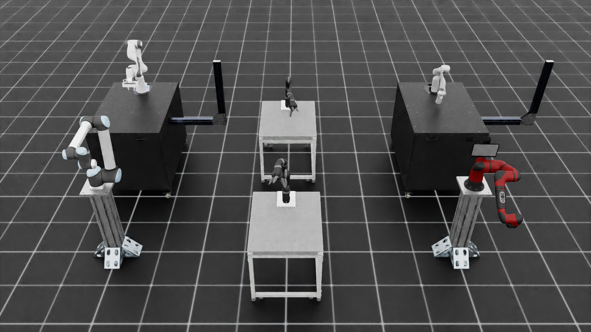./isaaclab.sh -p scripts/demos/arms.py
isaaclab.bat -p scripts\demos\arms.py
生成不同的双足机器人
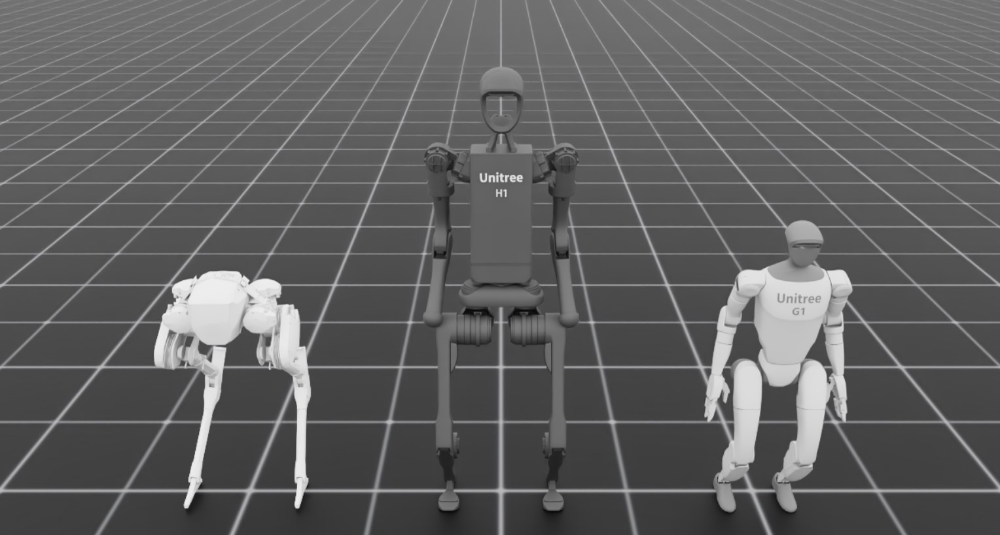./isaaclab.sh -p scripts/demos/bipeds.py
isaaclab.bat -p scripts\demos\bipeds.py
生成不同可变形（软）体，并让它们从一定高度落下:
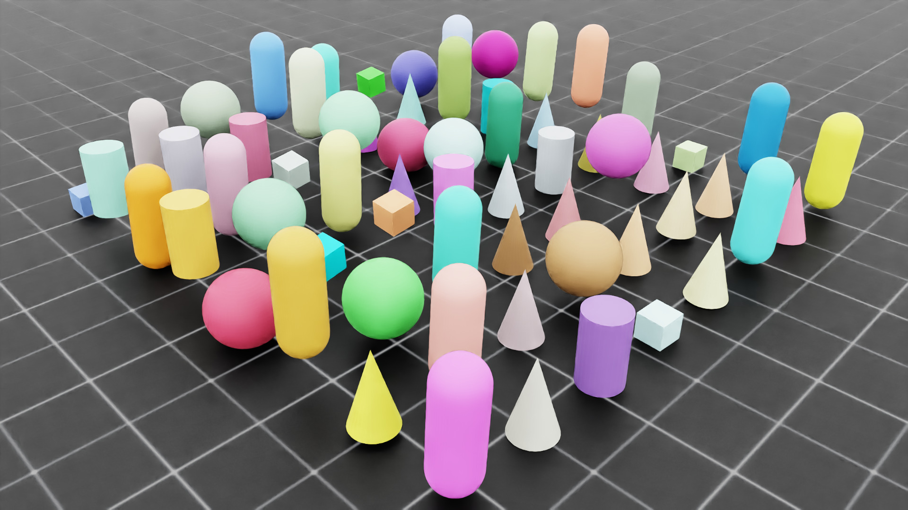./isaaclab.sh -p scripts/demos/deformables.py
isaaclab.bat -p scripts\demos\deformables.py
训练好的 H1 粗糙地形行走策略的交互式推理演示:
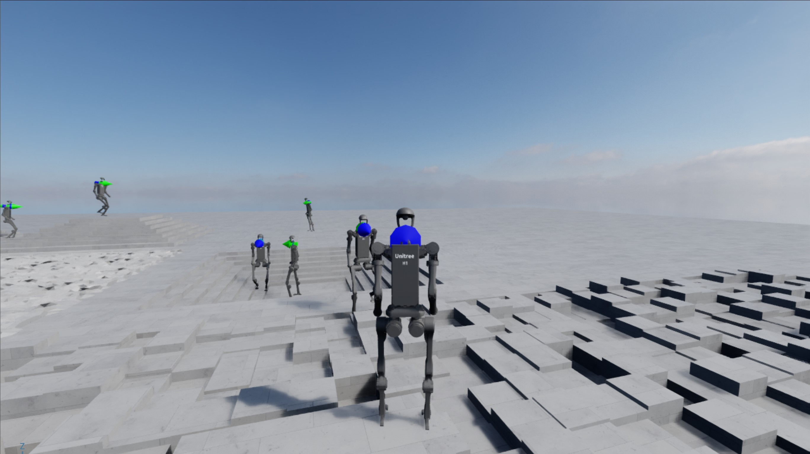./isaaclab.sh -p scripts/demos/h1_locomotion.py
isaaclab.bat -p scripts\demos\h1_locomotion.py
这是一个交互式演示，可以使用鼠标和键盘运行。要进入第三人称视角，请在场景中点击一个人形角色。一旦进入第三人称视角，人形角色可以通过键盘控制:
UP: 前进LEFT: 向左转RIGHT: 向右转DOWN: 停止C: 在第三人称和透视视图之间切换ESC: 退出当前第三人称视图
如果在选择人形角色时发生误操作，并且在人形体之外点击，控制台将打印消息指示错误，例如
The selected prim was not a H1 robot或Multiple prims are selected. Please only select one!。生成不同的灵巧手，并控制它们打开和关闭:
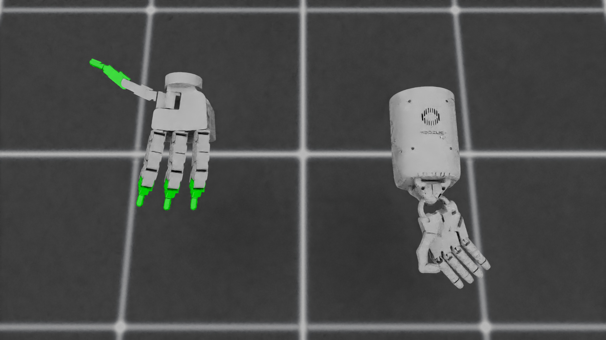./isaaclab.sh -p scripts/demos/hands.py
isaaclab.bat -p scripts\demos\hands.py
定义多个对可视化有用的标记:
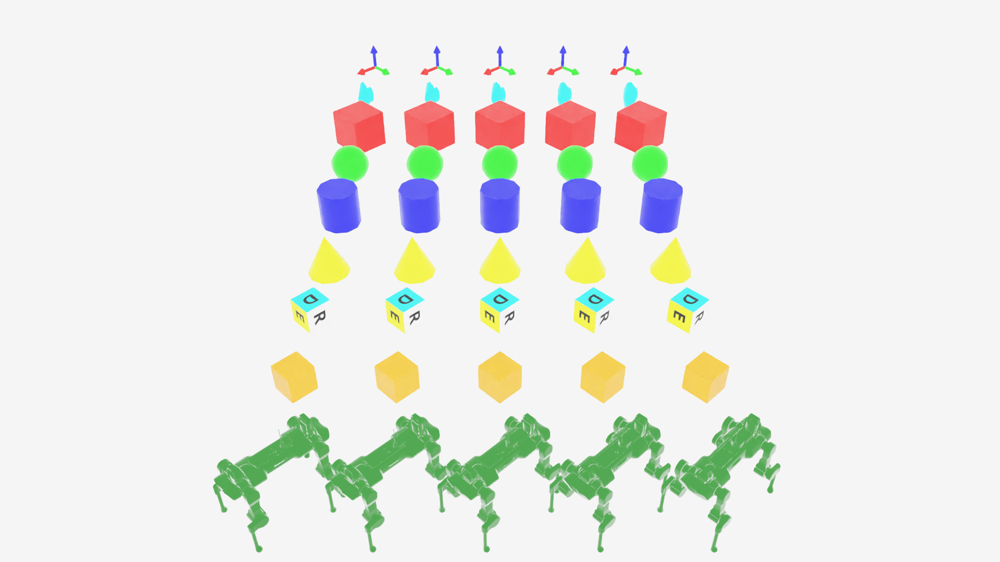./isaaclab.sh -p scripts/demos/markers.py
isaaclab.bat -p scripts\demos\markers.py
使用交互式场景，在不同的环境中生成各种资产
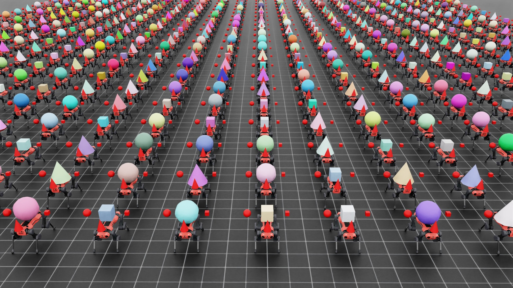./isaaclab.sh -p scripts/demos/multi_asset.py
isaaclab.bat -p scripts\demos\multi_asset.py
使用 RigidObjectCollection 生成和视图操作来演示装箱示例：
./isaaclab.sh -p scripts/demos/bin_packing.py
isaaclab.bat -p scripts\demos\bin_packing.py

使用交互式场景并生成一个简单的并联机器人，用于拾取和放置:
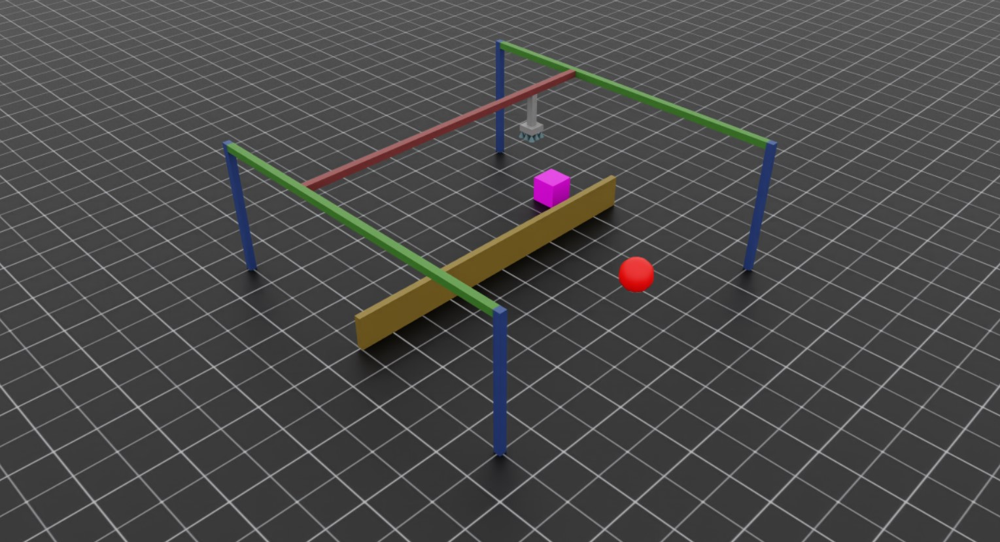./isaaclab.sh -p scripts/demos/pick_and_place.py
isaaclab.bat -p scripts\demos\pick_and_place.py
这是一个交互式演示，可使用鼠标和键盘运行。你的目标是拾取紫色立方体并将其放在红色范围上！使用以下控制与仿真进行交互:
按住
A键让夹爪跟踪方块位置。按住
D键让夹爪跟踪目标位置按下
W或S键分别向上或向下移动龙门架。按下
Q或E键以打开或关闭夹爪
使用具有力反馈的 Haply 触觉设备远程操作 Franka Panda 机器人：
./isaaclab.sh -p scripts/demos/haply_teleoperation.py --websocket_uri ws://localhost:10001 --pos_sensitivity 1.65
isaaclab.bat -p scripts\demos\haply_teleoperation.py --websocket_uri ws://localhost:10001 --pos_sensitivity 1.65

此演示需要 Haply Inverse3 和 VerseGrip 设备。此演示的目标是拾取立方体或用末端执行器触碰它。Haply 设备提供：
用于末端执行器控制的三维位置跟踪
用于接触感知的定向力反馈
用于夹爪和末端执行器旋转控制的按钮输入
有关详细的设置说明，请参阅 设置 Haply 远程操作 。
创建和生成具有不同配置的程序生成地形
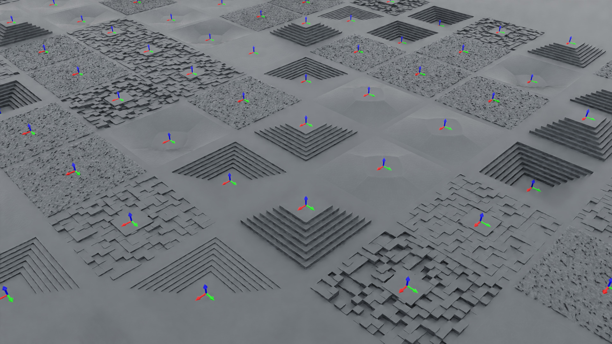./isaaclab.sh -p scripts/demos/procedural_terrain.py
isaaclab.bat -p scripts\demos\procedural_terrain.py
在默认环境中生成一个四旋翼飞行器:
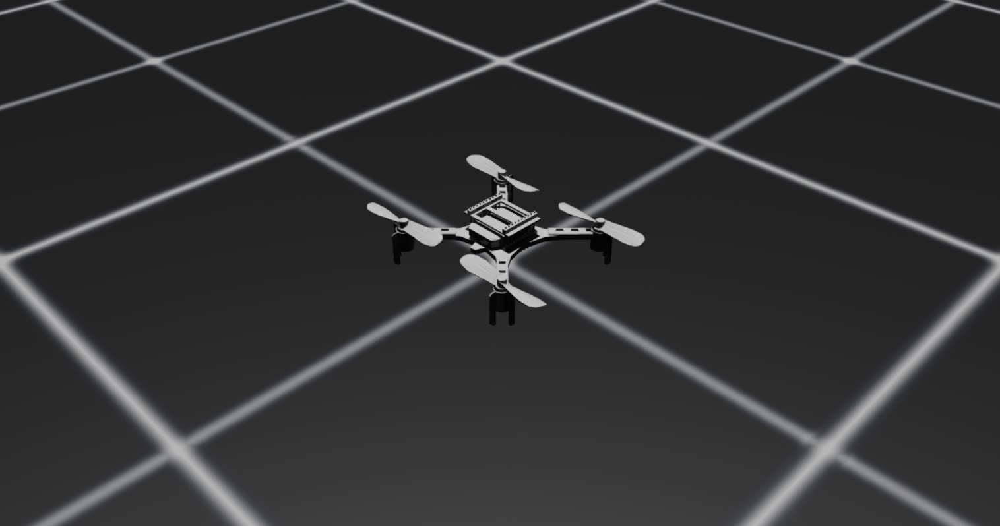./isaaclab.sh -p scripts/demos/quadcopter.py
isaaclab.bat -p scripts\demos\quadcopter.py
生成不同的四足机器人，并使用位置命令让机器人站立:
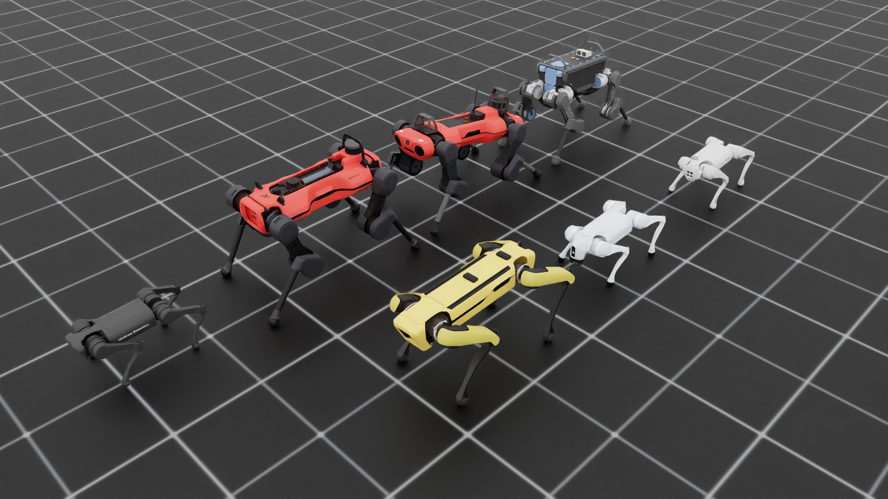./isaaclab.sh -p scripts/demos/quadrupeds.py
isaaclab.bat -p scripts\demos\quadrupeds.py
生成一个使用Warp内核进行光线投射的多网格光线投射器
./isaaclab.sh -p scripts/demos/sensors/multi_mesh_raycaster.py --num_envs 16 --asset_type objects
isaaclab.bat -p scripts\demos\sensors\multi_mesh_raycaster.py --num_envs 16 --asset_type objects

{kind=link}
{kind=link}
{kind=link}
{kind=link}
{kind=link}
{kind=link}
{kind=link}
{kind=link}
{kind=link}
{kind=link}
{kind=link}